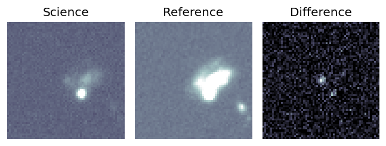
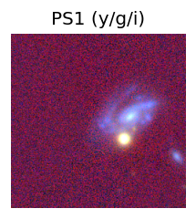
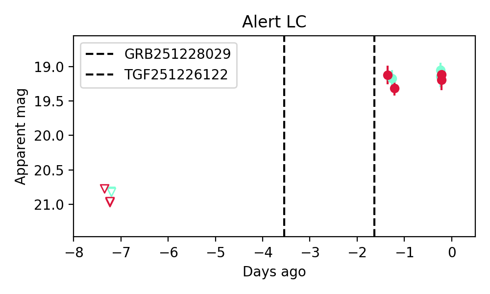
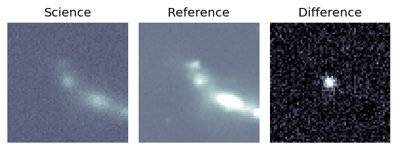
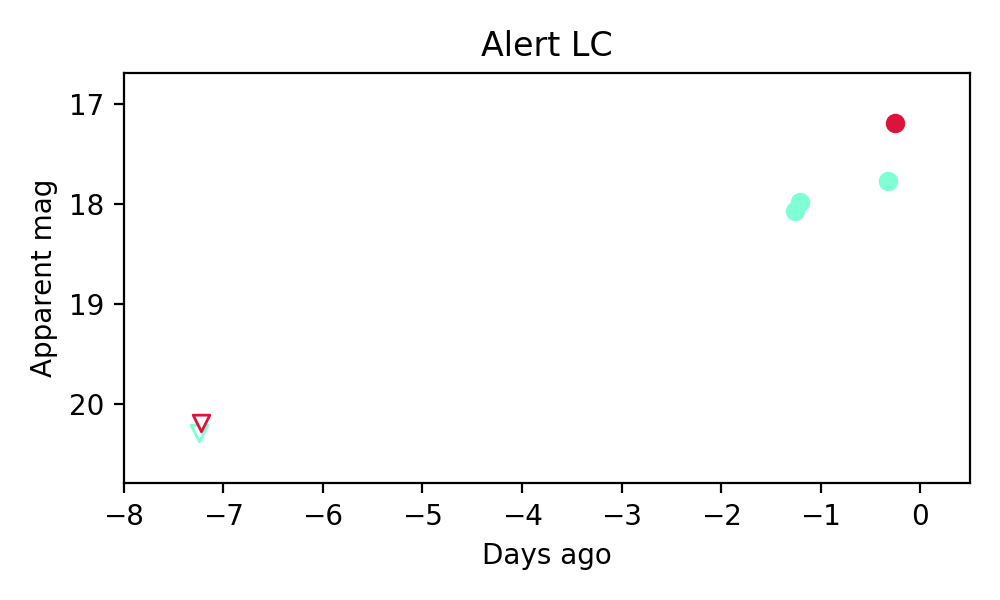
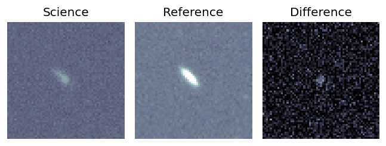
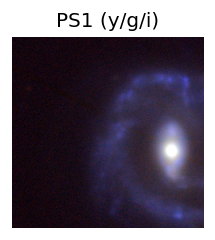
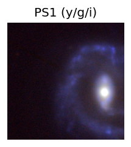
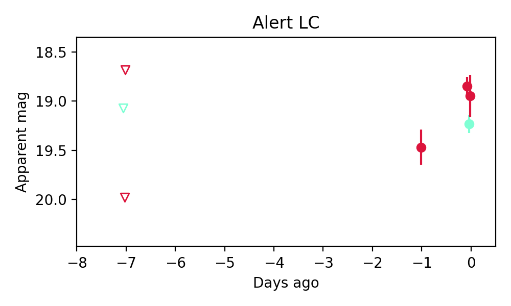

Candidate List 20251229Previous Day Next Day
Section 1: New Sources (age<1d) Section 2: Old (1-5d) sources observed last nightplaceholder
Section 1: New Afterglow/FBOT Cands Last Night (0)
Section 2: Older Sources Observed Last Night (4)
0. ZTF25ackwprs (FBOT?) [Back to Top] [Share] [Trigger Swift] [Fritz] [Lasair]RA, Dec: 160.41125, 46.79133 10h41m38.70s, 46d47m28.79sGalactic (l, b): 166.57055, 57.83902 ext(g-r) = 0.019
TESS: Sectors [21 48]
SDSS (10 arcsec):Found SDSS phot-z: z=0.20; peak abs mag = -21.04
PS1: 0 sources in 3 arcsec
LegacySurvey: 1 sources in 3 arcsec Closest: d = 2.36 arcsec, 266.6 deg (east of north) photoz=0.02 (68% bounds 0.01, 0.04), type=SER peak abs mag = -16.12 (68% bounds -13.5, -17.19)

Extinction-corrected gr color:
From alerts: -0.09 +/- 0.13 mag
Consistent with synchrotron, g-r>0!
Rise Rate:
g: 0.28 mag/day
r: 0.32 mag/day
i: -99 mag/day
Fade Rate:
g: -99 mag/day
r: -99 mag/day
i: -99 mag/day
1. ZTF25ackyfnb (FBOT?) [Back to Top] [Share] [Trigger Swift] [Fritz] [Lasair]RA, Dec: 172.31819, 20.58564 11h29m16.36s, 20d35m8.29sGalactic (l, b): 227.73424, 70.13817 ext(g-r) = 0.023

TESS: Sectors [22 49]
PS1: 0 sources in 3 arcsec
LegacySurvey: 1 sources in 3 arcsec Closest: d = 0.44 arcsec, 287.4 deg (east of north) photoz=0.12 (68% bounds 0.01, 0.79), type=PSF peak abs mag = -21.53 (68% bounds -15.9, -26.34)

Extinction-corrected gr color:
From alerts: 0.57 +/- 0.08 mag
Consistent with synchrotron, g-r>0!
Rise Rate:
g: 0.39 mag/day
r: 0.43 mag/day
i: -99 mag/day
Fade Rate:
g: -99 mag/day
r: -99 mag/day
i: -99 mag/day
2. ZTF25acldclj (Afterglow?) [Back to Top] [Share] [Trigger Swift] [Fritz] [Lasair]RA, Dec: 170.43483, 17.68707 11h21m44.36s, 17d41m13.46sGalactic (l, b): 232.77926, 67.27011 ext(g-r) = 0.023
TESS: Sectors [45 46 49]
SDSS (10 arcsec):Found SDSS phot-z: z=0.07; peak abs mag = -17.81
PS1: 0 sources in 3 arcsec
LegacySurvey: 1 sources in 3 arcsec Closest: d = 2.70 arcsec, 42.9 deg (east of north) photoz=0.05 (68% bounds 0.04, 0.06), type=SER peak abs mag = -16.94 (68% bounds -16.27, -17.5)

Extinction-corrected gr color:
From alerts: -0.16 +/- 0.24 mag
Consistent with synchrotron, g-r>0!
Rise Rate:
g: 0.5 mag/day
r: 0.42 mag/day
i: -99 mag/day
Fade Rate:
g: -99 mag/day
r: -99 mag/day
i: -99 mag/day
3. ZTF25acldfsf (Afterglow?) [Back to Top] [Share] [Trigger Swift] [Fritz] [Lasair]RA, Dec: 218.47329, 5.4601 14h33m53.59s, 5d27m36.34sGalactic (l, b): 355.90326, 57.38105 ext(g-r) = 0.038 

TESS: Sectors 51
PS1: 0 sources in 3 arcsec
LegacySurvey: 1 sources in 3 arcsec Closest: d = 3.18 arcsec, 244.9 deg (east of north) photoz=0.02 (68% bounds 0.01, 0.04), type=EXP peak abs mag = -16.15 (68% bounds -14.67, -17.23)

Extinction-corrected gr color:
From alerts: 0.33 +/- 0.13 mag
Consistent with synchrotron, g-r>0!
Rise Rate:
g: 0.13 mag/day
r: 0.63 mag/day
i: -99 mag/day
Fade Rate:
g: -99 mag/day
r: -99 mag/day
i: -99 mag/day